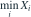
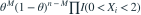

样本独立同分布，密度在  、
、 上分别为
上分别为  、
、 。以下哪个是一维充分统计量？
。以下哪个是一维充分统计量？
、 上分别为 、。以下哪个是一维充分统计量？- A
- B

- C
- D

我已思考，展开答案与解析
正确答案：C
- 联合密度可写为

，其中 。
。 - 由因子分解定理，
 充分；相同样本和、最大值或最小值并不能确定两个区间的计数。
充分；相同样本和、最大值或最小值并不能确定两个区间的计数。
易错提醒充分性应根据完整似然而不是只根据总体均值判断。
JYSG · 432精选 · 册内复旦大学432·2016年·八；充分性拆解；PDF第32页（印刷页30）
原题知识点延伸